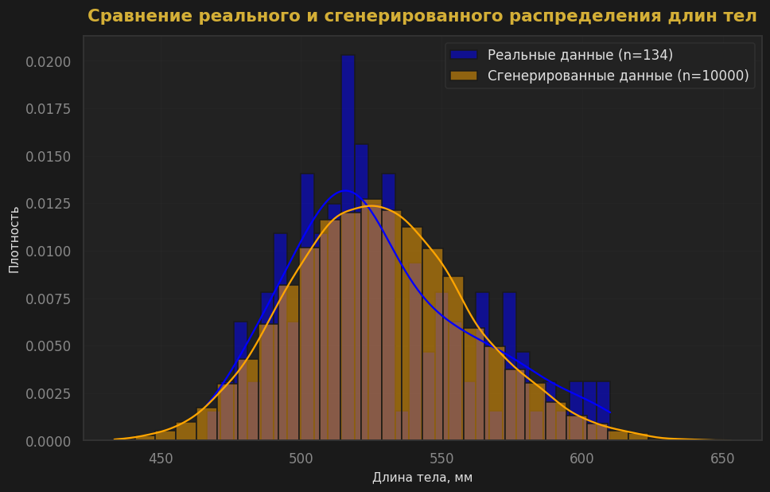

Lab01 - sprint 2#
random 01#
Description#
В спринте 1 были исследованы 4 величины: масса тела животных, длина тела, а также длины плечевой и бедренной костей. Для построения генератора случайных чисел выбрана случайная величина «Длина тела» (C-R curved).
Как было выяснено и обосновано ранее, для этой величины характерно распределение Фишера. Для реализации генератора используется метод обратной функции.
Выбор метода обоснован тем, что он универсален для непрерывных распределений. Остальные методы из предложенной таблицы не подходят:
Показательные и нормальные датчики, быстрый показательный датчик, датчик без логарифмов — специализированы для экспоненциального закона.
Метод полярных координат (Бокса-Мюллера), метод прямоугольника-клина-хвоста, метод отношений — применяются исключительно для нормального распределения.
Метод Неймана теоретически возможен, но требует подбора огибающей функции и избыточно сложен для F-распределения.
math desc#
Суть метода обратной функции: Любую непрерывную случайную величину можно сгенерировать, если пропустить равномерный шум (от 0 до 1) через её обратную функцию распределения.
Теорема: Если случайная величина \(U\) имеет равномерное распределение на отрезке \([0, 1]\), а \(F(x)\) — это функция распределения некоторой непрерывной случайной величины, то случайная величина \(X = F^{-1}(U)\) имеет функцию распределения \(F(x)\), где \(F^{-1}(u)\) — обратная функция (квантиль), которая отвечает на вопрос: «При каком значении \(X\) вероятность того, что случайная величина окажется меньше этого \(X\), равна \(u\)?».
Доказательство: По определению функции распределения нам нужно найти \(P(X \le x)\). Подставим \(X = F^{-1}(U)\): $\( P(F^{-1}(U) \le x) \)\( Так как функция распределения \)F(x)\( монотонно возрастает, мы можем применить её к обеим частям неравенства: \)\( P(U \le F(x)) \)\( Поскольку \)U\( имеет равномерное распределение на отрезке \)[0, 1]\(, вероятность того, что случайная величина \)U\( примет значение меньшее, чем некоторое число \)y \in [0, 1]\(, равна самому этому числу \)y\(. В нашем случае роль \)y\( играет \)F(x)\(. Следовательно: \)\( P(U \le F(x)) = F(x) \)$ Что и требовалось доказать.
В коде мы генерируем равномерный шум \(U \sim U(0,1)\) с помощью np.random.uniform и применяем функцию stats.f.ppf (Percent Point Function), которая в библиотеке scipy.stats является обратной функцией распределения Фишера.
code#
Параметры: d1=67454.62, d2=555.43, scale=526.24
autotests#
Перед визуальным сравнением данных запустим автотесты (Unit tests), чтобы убедиться в корректности работы написанного генератора.
Автотест 1: Проверка длины выходного массива#
Проверим, что генератор возвращает ровно столько значений, сколько мы у него запросили.
Запуск всех автотестов#
Верно! Тест 1 (Длина выборки) пройден: сгенерировано ровно 500 значений.
Успешно! Тест 2 (Воспроизводимость) пройден: результаты детерминированы при заданном seed.
Успешно! Тест 3 (Мат. ожидание) пройден: выборочное (528.01) ≈ теоретическому (528.14).
Успешно! Тест 4 (Границы) пройден: все значения >= 0.
ВСЕ АВТОТЕСТЫ УСПЕШНО ПРОЙДЕНЫ!
tests#
Cравним реальные и сгенерированные данные с помощью графиков и непараметрического теста Колмогорова-Смирнова.

Сравнение описательных статистик
| Метрика | Реальные данные | Сгенерированные | |
|---|---|---|---|
| 0 | Среднее | 528.11 | 528.01 |
| 1 | Медиана | 520.80 | 526.69 |
| 2 | Ст. отклонение | 32.55 | 31.67 |
| 3 | Минимум | 466.50 | 433.67 |
| 4 | Максимум | 609.90 | 652.76 |
--- Тест Колмогорова-Смирнова ---
Статистика теста (D): 0.0884
P-value: 0.2384
Верно))) ВЫВОД: P-value > 0.05. Нулевая гипотеза НЕ отвергается.
Сгенерированные данные статистически неотличимы от реальных. Твой генератор работает идеально!
Попробуем посмотреть, как влияют параметры распределения на вид функции. будем изменять: размер генерируемой выборки, числитель и знаменатель в распределениии Фишера, максимальное (scale) значение длины тела.#
resume#
В рамках второго спринта мы написали генератор, который создает искусственные данные о длине тела макак. В качестве основы был выбран метод обратной функции (квантильное преобразование), так как он отлично работает для непрерывных величин, если мы знаем их закон распределения. За основу взяли распределение Фишера, параметры которого мы подобрали в первом спринте.
Чтобы убедиться, что генератор работает правильно, были проведены несколько проверок:
Написаны автотесты (проверили длину выборки, воспроизводимость при фиксированном seed и совпадение с теоретическим мат. ожиданием).
Сравнение описательных статистик (среднее, медиана, дисперсия) реальных и сгенерированных данных.
Проведен тест Колмогорова-Смирнова. Значение p-value получилось больше 0.05, а это значит, что генератор создает данные, которые статистически невозможно отличить от настоящих измерений длины макак.
Также мы решили поэкспериментировать с параметрами функции и посмотреть, как они меняют график:
Размер выборки (n): Чем больше значений мы генерируем, тем более гладкой и идеальной становится гистограмма, она всё ближе к теоретической кривой.
Числитель (dfn): Если поставить его равным 2, то график резко взлетает влево к нулю и сразу падает. Если постепенно увеличивать этот параметр, пик смещается вправо, а сам график становится более пологим и начинает напоминать нормальное распределение.
Знаменатель (dfd): Этот параметр отвечает за правый «хвост» графика. Если он маленький, то появляются выбросы - аномально большие макаки. Также dfd влияет на ширину пика на полувысоте: чем больше это значение, тем уже пик и тем меньше шанс встретить выброс.
Scale (масштаб): Этот параметр просто «растягивает» график вдоль оси X. Он нужен, чтобы перевести абстрактные математические единицы в реальные миллиметры и задать нужный диапазон длин.
Список литературы: Кремер, Н. Ш. Теория вероятностей и математическая статистика : учебник для вузов / Н. Ш. Кремер. — 2-е изд., перераб. и доп. — Москва : ЮНИТИ-ДАНА, 2004. — 573 с.